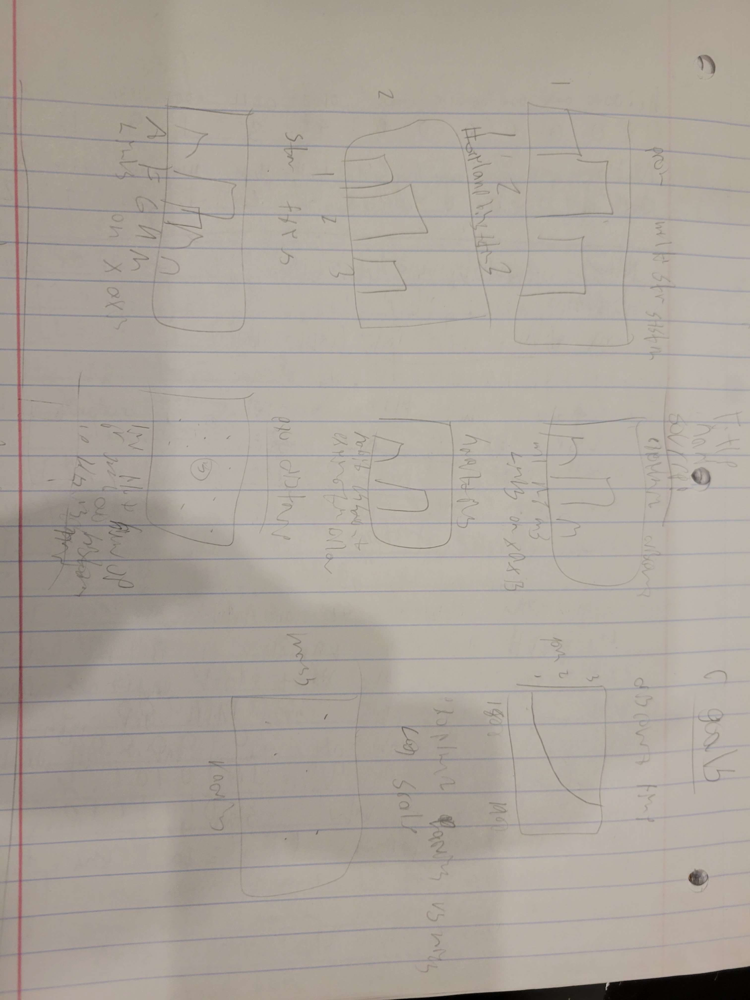

The data used for this visualization was taken from The NASA Exoplanet Archive . It includes information on exoplants, including name, features and discovery methods. A downloaded csv was used to access the data.

I orignally had planned on a similar layout to the final project. I had wanted a more interactive view for showing distance, showcasing the earth in the middle with the exoplants displayed around it based on their distance. This didn't work with the data though as I only knew the distance, not a direction for each exoplanet.
Clicking on a bar allows users to filter data to match specifically with that data. Only one bar can be used to filter at a time. If a barchart is used for filtering it will not filter when another bar is clicked. Scrolling over a bar will result in a popup with more information.
This barchart showcases the number of exoplanets with each number of stars in their system.
This barchart showcases the number of habitable exoplanets. Unknowns can be filtered out by using the Remove Unknowns button at the top left.
This barchart showcases the number of exoplanets with each number of planets in their system.
This barchart showcases the different star types and number of them in the exoplanet data. Unknowns can be filtered out by using the Remove Unknowns button at the top left.
This barchart showcases the number of exoplents a certain distance range from earth.
This barchart showcases the different discovery types and the number of exoplanets discovered each way.
This data can be filtered by using the barchart filtering mentioned above. Scrolling over the linechart will give the user more information.
This linechart showcases the number of exoplanet discoveries from each year.
This data can be filtered by using the barchart filtering mentioned above. Scrolling over the scatterplot will give the user a popup with more information, the scrolled over dot will also be highlighted in red.
This visualization allows users to determine relations between different pieces of data. For example, if you click the habitable bar, you'll notice that all habitable exoplanets are between 0 and 1700 parsecs from Earth.
You can also learn things like when discovery methods started being used. For example, if you click on Microlensing, you'll notice that it isn't actually used until the early 2000's.
Libraries and references can be accessed here
I created classes for the different displays, barchart, linechart, etc, and then created objects using those classes in main to create each individual visualization. Filtering and overall processes were also done in main. Stylization was done either in the classes or in the css file.
My code is hosted here
The site can be viewed here
I really wanted to add in tables, but I couldn't get them to display at all. The current Table class is just code I already got to work, but doesn't include the table itself. I would have at least liked to get that working.
I also would have prefered it if the animations we different, the way it just slides in the bars looks bad, especially when adding back in bars after they had previously been filtered out.
My biggest challenge was filtering, which still doesn't work correctly. Currently filtering only works if 1 bar per visualization is selected and occasionally messes up if "Remove Unknowns" is also selected. I also made the mistake of creating a class for each visualization when starting out. This was much messier and I later had to clean it up into single classes, I will not be doing that again. For future projects, I think I will start by making basic classes for everything, then slowly add in features, such as animation or filtering, to 1 class rather than attempting to do everything all at once as I tried to do in this project. For example, I had focused on adding the filtering with other items, so I was never able to properly test it or get it working correctly. In the next project, I'll get filtering, or another required item, done and tested before trying to move on to the next section.
Include a 2-3 minute demo video, showing your application in action. The easiest way to record this is with a screen capture tool, which also captures audio- such as Quicktime. Use a voiceover or video captions to explain your application. Demo videos should be sufficient on their own, but can reference your documentation. Include the name of the project, your name, the project components, and how your application works. You can present it on your webpage or on youtube, but linked on your webpage.